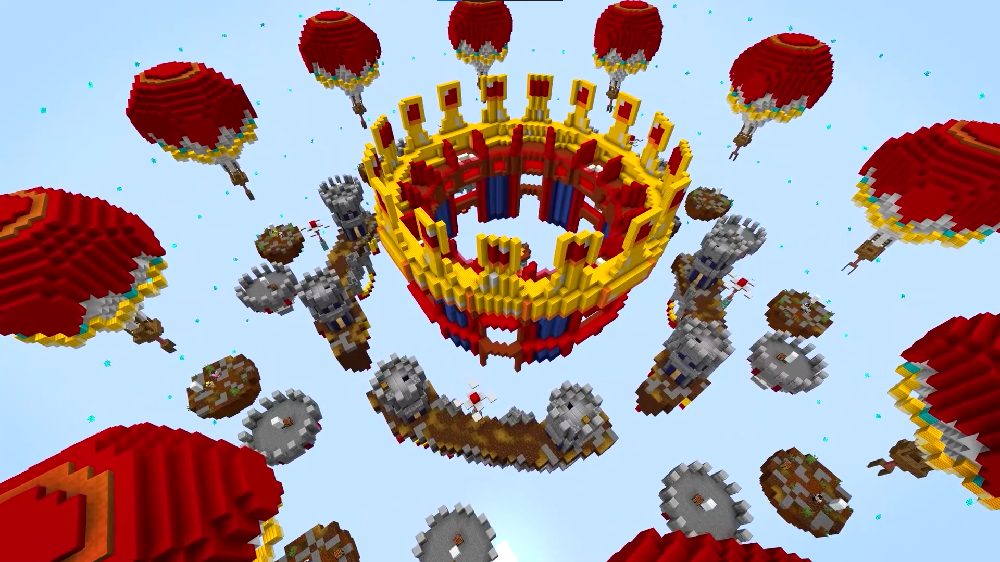

Minecraft is filled with the freedom to create and make whatever you want with your own little world, however with the rise of public servers like Hypixel, Mineplex and The Archon, (which allow you to play various game modes with people all over the world) competitive spirit was bound to rise in the hearts of more die-hard players of the game.
To this day there are competitions of PvP, (player vs player fighting) building, parkour and so many more obscure minigames that tie both our competitive spirit with our social natures!
There have even been semi-professional tournaments held and streamed to platforms like Twitch and Youtube, like MC Championships which is hosted by Noxcrew. The event takes popular and growing content creators and has them compete in teams of 4 through 8 games to see who will rise to the top!
Follow the Noxcrew on Twitter!

Source: Noxcrew Youtube Channel (2019, November 8)
WE GOT 4TH INDIVIDUAL!!!!! SURVIVAL GAMES DESERVES TO DIE!!!!! pic.twitter.com/QiFANqCy6O
— Ranboo (@Ranboosaysstuff) December 11, 2021
Another facet of competiition in Minecraft are Speedruns. These are timed playthroughs of the game, competing to complete certain achievements in the fastest time. The most popular type of Minecraft speedrun is to beat the Ender Dragon in the fastest time, in which IluminaHD and Dream are popular members of this community.